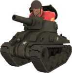

First person shooters can often feel pretty generic, since the majority of them tend to share the same gameplay loop. Walk around, shoot the enemies until they die, win, and repeat ad infinitum. If the FPS fails to bring anything else to the table, it can get stale extremely quickly. As such, many FPSs will use many strategies to avoid repetition, such as including different gamemodes, adding weapons with fun gimmicks, and more. TF2 is no different, and even after almost 17 years it has yet to lose any momentum. While there is a lot to talk about for this game, this website will be talking about one iconic aspect about the game that defines so many interactions: rocket jumping. This is an easy movement technique exclusive to the Soldier class that's very versatile and is one of the main reasons why TF2 remains so popular despite its age.
